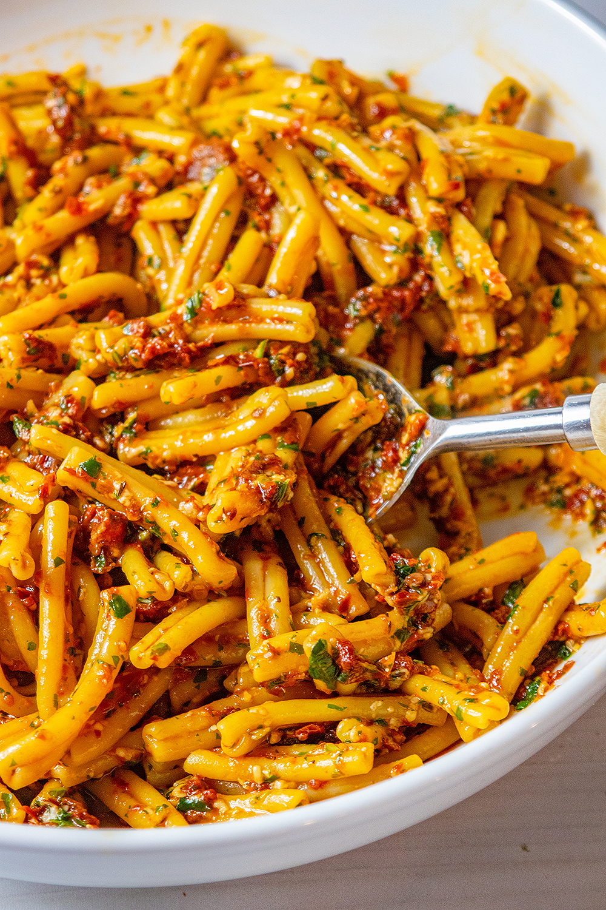

Sundried Tomato Pesto Pasta

Description
Pasta served with pesto made from jarred sun-dried tomatoes.
Ingredients
- 12 oz pasta
- 8 oz jar sun-dried tomatoes
- 2 garlic cloves
- salt & pepper
- 1 cup fresh basil leaves
- 1/2 cup parmesan
Steps
- Cook pasta in large pot of salted water until tender, stirring occasionally. Drain, reserving 1 cup of cooking liquid.
- Blend remaining ingredients until tomatoes are finely chopped.
- Add pasta to pesto and toss to coat, adding reserved cooking liquid to moisten.